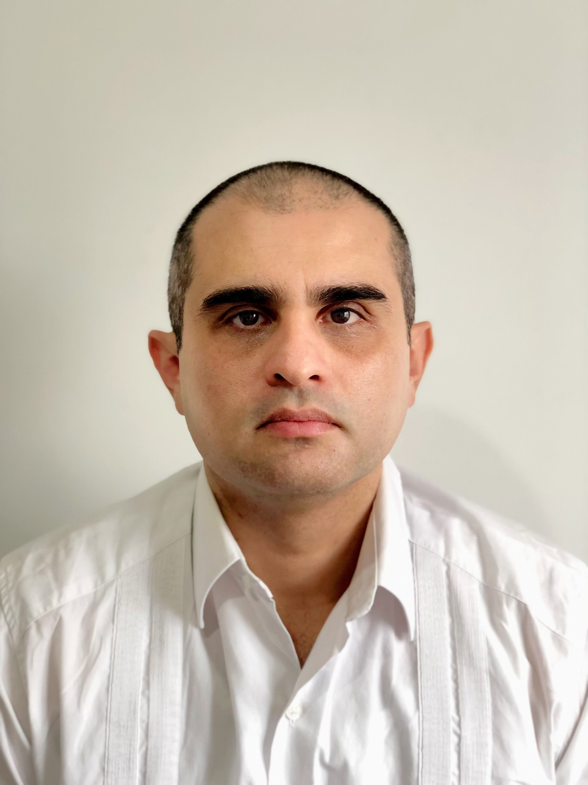

Introduce Yourself
Issue 2
Meet the department’s newest faces…
Emma Simpson
I joined the department as a lecturer in April 2021, having previously completed a PhD and postdoc at Lancaster University.
My research is in extreme value analysis, particularly focusing on dependence in multivariate and spatio-temporal settings. I’m also interested in the environmental applications of these extreme value methods.
Outside of work, I like to crochet, read, and listen to country music. I’m also a big fan of pub quizzes!

Javier Rubio
I joined the department as a lecturer in April 2021, coming from King’s College London, where I was a lecturer in the Department of Mathematics (2018-2021).
I did my PhD at the University of Warwick (2010-2013), and after that I became a research assistant at Warwick (2013-2016). Between 2016 and 2018, I was a research fellow at the London School of Hygiene and Tropical Medicine, working on applications for cancer epidemiology.
My main research interests are in Bayesian statistics, objective Bayes, model selection, survival models, longitudinal models, and biostatistics.
Jeremias Knoblauch
I have been a Biometrika post-doctoral fellow at the department since October 2021 and an EPSRC fellow and lecturer since July 2022.
My fellowships support my research on optimisation-centric generalised Bayesian methods with applications across a variety of areas, but particularly in machine learning and simulation-based methods.
Before joining UCL, I was a PhD student within the Oxford-Warwick Statistics Programme (OxWaSP) and the UK’s first Facebook Fellow.
Moe John
I joined the department as a senior staffing officer in March 2020, just before the pandemic. I am currently on secondment as a departmental manager.
Before joining UCL, I worked in various human resources roles at London Metropolitan University, Imperial College London and the Civil Service.
In my spare time, I like taking my dog Dexter out for a walk and run in the countryside.
Takoua Jendoubi
I joined the department last year as a lecturer (teaching) in statistical science.
I did my PhD at Imperial College London, where I also worked for some time before joining the department. My research interests lie in Bayesian hierarchical modelling and high-throughput medical data integration.
I am teaching STAT0004 this year and coordinating the MSc projects. If you have any questions, do not hesitate to get in touch or pop into my office – number 135. Any discussions about research, teaching or both are very much welcome!